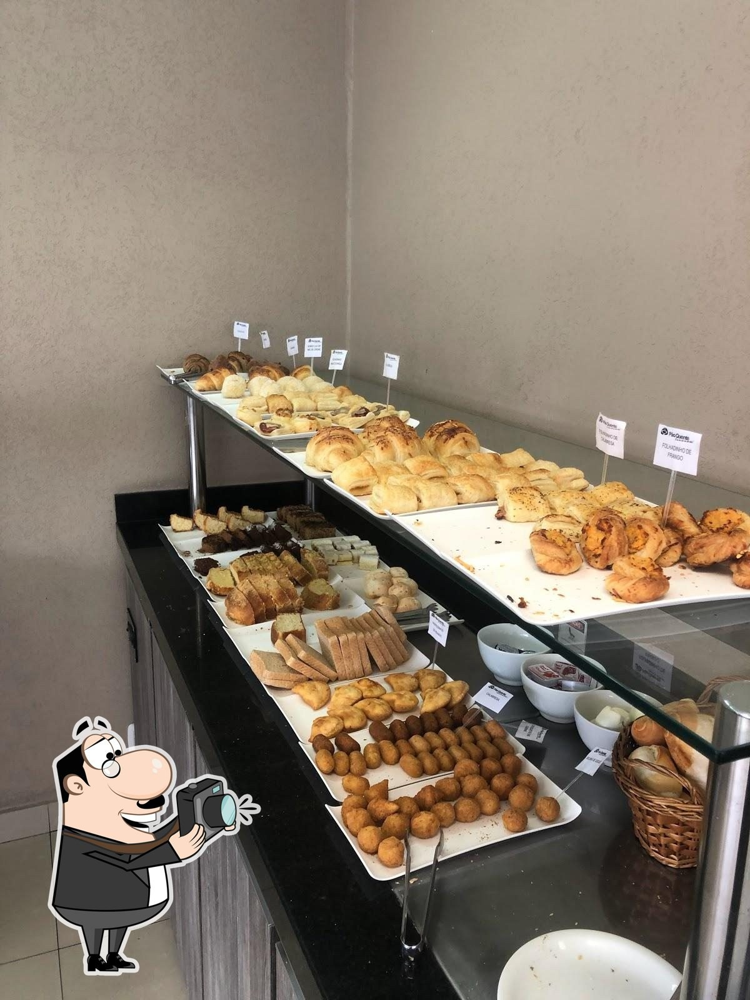
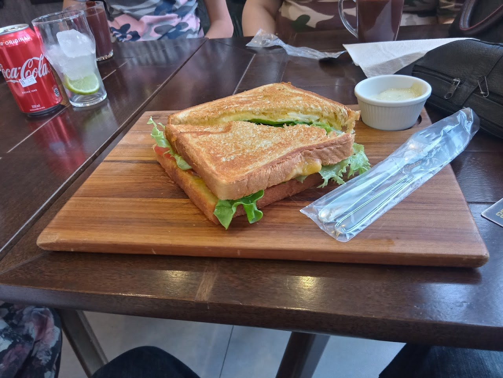
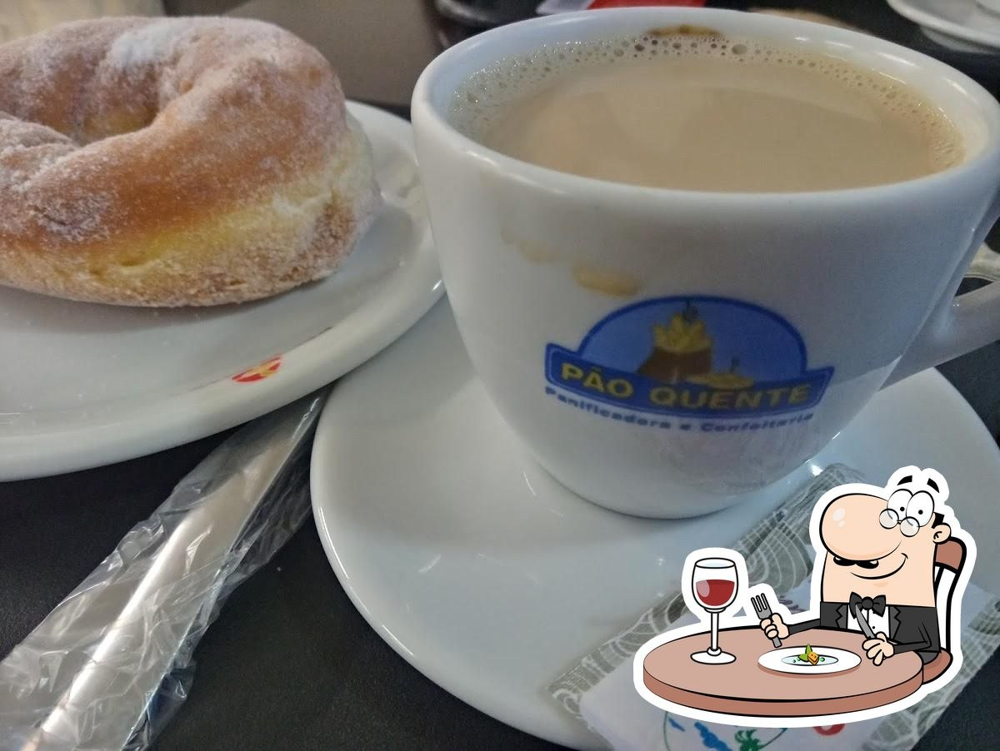
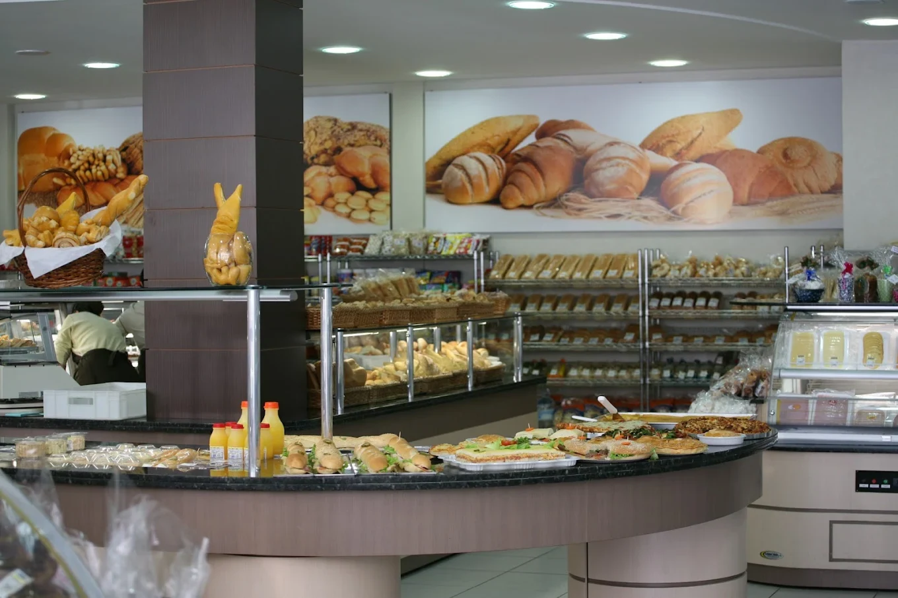

Todos os dias
Pães frescos, cafés, buffet, lanches, doces e refeições preparados para fazer parte dos seus melhores momentos — do primeiro café ao fim do dia.


A Pão Quente reúne padaria, confeitaria, café e refeições em uma experiência simples: comida gostosa, variedade e um lugar acolhedor para estar.



A Pão Quente nasceu em 1994 a partir do sonho e da dedicação de Henrique Forini, com uma proposta simples que continua atual: oferecer produtos frescos, saborosos e preparados com cuidado.
Com o tempo, novas unidades chegaram, os ambientes evoluíram e o cardápio ganhou novas possibilidades. Mas uma coisa permaneceu: a vontade de receber bem e transformar refeições comuns em momentos gostosos.
Cada unidade tem seu ritmo e sua personalidade, mas todas compartilham o mesmo cuidado com sabor, qualidade e acolhimento.
Encontre a unidade mais conveniente, confira os detalhes e fale direto pelo WhatsApp quando precisar.